Show other papers
$H$-linear magnetoresistance in NbSe$_2$ due to impeded cyclotron motion
Authors: A. Kool, D. Pizzirani, P. Tinnemans, S. Wiedmann, F. Flicker, J. van Wezel, N. E. Hussey, R. D. H. Hinlopen
Type: both · Category: strongly correlated electrons · PDF: https://arxiv.org/pdf/2605.12048v1
Analysis basis: full PDF text, analyzed in chunks
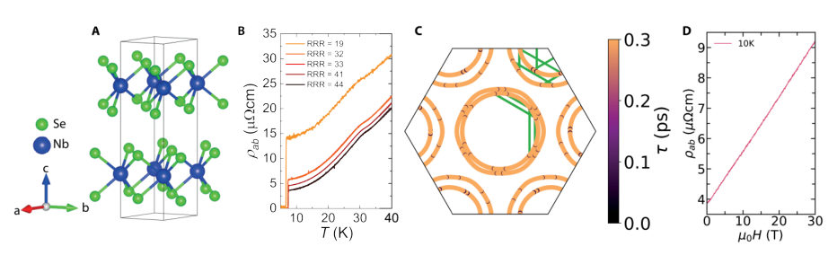
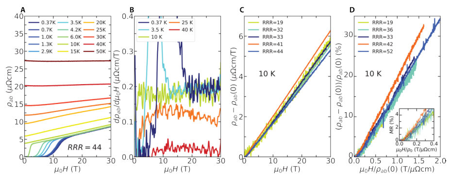

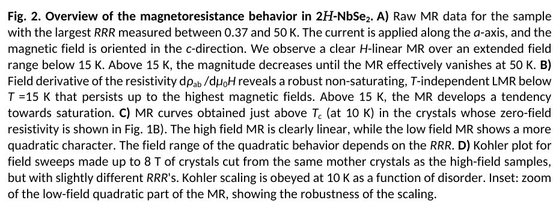
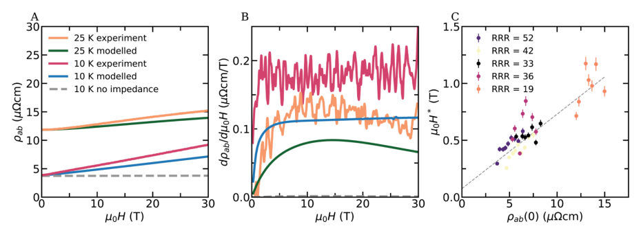
Summary. This paper identifies that the unusual linear magnetoresistance in NbSe2 is caused by the CDW order creating 'hotspots' that interrupt the orbital motion of electrons. This mechanism simultaneously explains why quantum oscillations disappear in the CDW state. The findings provide a new paradigm for understanding non-saturating magnetoresistance in various correlated electron systems.
Why it may be interesting. not directly relevant
Detailed structure
Main problem. Understanding the origin of robust H-linear magnetoresistance (LMR) and the simultaneous absence of quantum oscillations in the charge-density-wave (CDW) state of NbSe2.
Main result. The study demonstrates that LMR arises from 'impeded cyclotron motion' (ICM) caused by scattering sinks (hotspots) on the Fermi surface where the CDW order connects different parts of the Fermi cylinders.
Method. High-field magnetotransport measurements (up to 30 T) combined with Boltzmann transport analysis using the Shockley-Chambers Tube Integral Formalism (SCTIF).
Model / system. The physical system is the transition metal dichalcogenide 2H-NbSe2 in its CDW phase. The theoretical model is the Impeded Cyclotron Motion (ICM) framework, which incorporates k-dependent scattering lifetimes at CDW-induced hotspots.
Key observables. Magnetoresistance (MR), Hall effect, resistivity, and the crossover field H*.
Important parameters / regimes. CDW transition temperature (T_CDW), crossover scale (H*), Residual Resistivity Ratio (RRR), and the H-linear slope.
Assumptions / limitations. The model utilizes the relaxation time approximation (RTA) and assumes that the primary impedance mechanism is the suppression of carrier lifetime at specific k-space hotspots.
Figures summary. Fig 1 shows crystal structure, resistivity, and Fermi surface with impedances; Fig 2 displays magnetoresistance and Hall effect data; Fig 3 shows temperature-dependent MR and the scaling of H* with zero-field resistivity.
Paper structure. The paper introduces the LMR mystery, presents experimental magnetotransport data across various temperatures and disorder levels, compares these results against various theoretical models (Drude, FS reconstruction, and ICM), and concludes by validating the ICM model as the primary driver of the observed transport anomalies.
Abstract
Linear magnetoresistance (LMR) is a widespread phenomenon observed in a host of quantum materials ranging from semiconductor nanostructures to quantum critical and strange metals. While multiple scenarios to explain LMR have been proposed, a complete understanding of the phenomenon remains elusive. Indeed, it is highly likely that the origin of LMR depends on the specific electronic state. Here, we report a study of the impact of disorder on the form of the magnetoresistance of the prototypical charge-density-wave (CDW) compound 2$H$-NbSe$_2$. The magnetoresistance is shown to exhibit strong qualitative and quantitative agreement with Boltzmann transport analysis incorporating impeded cyclotron motion (ICM). We identify the source of ICM in 2$H$-NbSe$_2$ as strong scattering sinks where the CDW order connects the high temperature Fermi cylinders. Such unusual "hotspots" provide an explanation for the observed LMR as well as for the long-unexplained absence of quantum oscillations inside the charge ordered state in 2$H$-NbSe$_2$. These findings provide strong evidence that ICM generates LMR in certain correlated metals.
A Monte Carlo Study of the Dipolar Universality Class in Three Dimensions
Authors: Akira Matsumoto, Yu Nakayama, Toshiki Onagi, Slava Rychkov
Type: theory · Category: statistical mechanics · PDF: https://arxiv.org/pdf/2605.11573v1
Analysis basis: full PDF text, analyzed in chunks
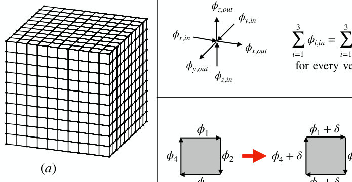
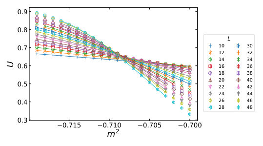
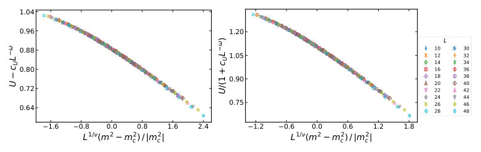
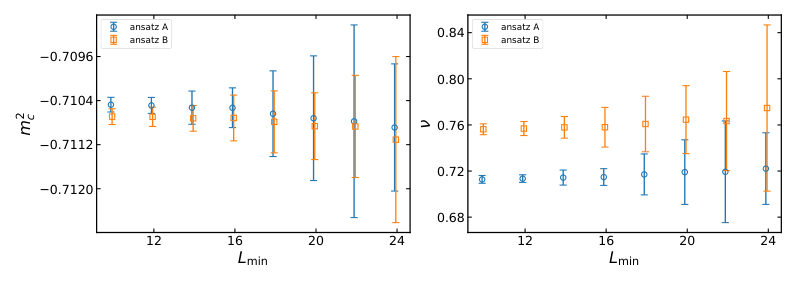
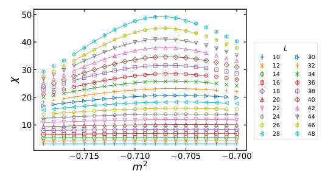
Summary. This paper introduces a new, unbiased Monte Carlo method to simulate the 3D dipolar universality class by exactly implementing the divergence-free constraint. It successfully estimates critical exponents and investigates how rotational symmetry emerges at the phase transition. The work provides a more reliable numerical foundation for studying dipolar ferromagnets compared to previous penalty-based methods.
Why it may be interesting. not directly relevant
Detailed structure
Main problem. The study aims to bridge the gap in knowledge regarding the 3D dipolar universality class by providing robust Monte Carlo simulations that avoid the biases of previous energy-penalty methods.
Main result. The authors demonstrate that the 3D dipolar universality class can be studied via unbiased Monte Carlo simulations, obtaining stable estimates for critical exponents and observing the emergence of rotational invariance at the critical point.
Method. A Markov Chain Monte Carlo approach using local Metropolis plaquette updates to preserve a divergence-free constraint and a global update for the zero mode, combined with finite-size scaling and data collapse analysis.
Model / system. A 3D lattice model of a ferromagnet with strong dipolar interactions, featuring a vector field on lattice edges subject to a discrete divergence-free constraint.
Key observables. Binder ratio (U), magnetic susceptibility (chi), critical exponents (nu, eta, omega, gamma), anisotropy parameter (Q4), and angular distribution of magnetization.
Important parameters / regimes. Mass parameter (m^2), quartic coupling (g), and cubic anisotropy coupling (h).
Assumptions / limitations. The study assumes the stability of the RG flow can be modeled in a 2D (h, g) plane and acknowledges limitations due to significant corrections to scaling and lattice-induced symmetry breaking.
Figures summary. Figure 1 shows the model and algorithm schematic; Figure 2 illustrates lattice vector variables; Figure 4 shows data collapse for the Binder ratio; Figure 8 displays angular distribution colormaps; Figure 11 shows anisotropy parameter dependence on lattice size; Figure 12 depicts possible RG flow diagrams.
Paper structure. The paper introduces the lattice model and divergence-free algorithm, details the Monte Carlo simulation setup and scaling analysis techniques, presents results for critical exponents and symmetry restoration, and concludes with a discussion on the stability of the dipolar fixed point under cubic anisotropy.
Abstract
The dipolar universality class describes the phase transition in 3D ferromagnets with strong dipolar interactions, as first discussed by Aharony and Fisher in the 1970s. While this universality class has been studied theoretically using renormalization group methods, as well as experimentally, little is known about it from Monte Carlo simulations. In this paper we aim to bridge this gap. We introduce a lattice model that faithfully implements the transverse constraint on the order parameter. We introduce a Markov Chain Monte Carlo algorithm which involves a combination of local Metropolis updates preserving the constraint, and a global update of the zero mode. We perform simulations on cubic lattices up to volume $48\times 48 \times 48$. We observe a continuous phase transition between the disordered and ordered phases. We obtain estimates of universal quantities such as the main critical exponents and the Binder ratio, and compare them with results from other techniques. We also investigate the emergence of rotation invariance at the critical point.
Automated multiphase identification and refinement in powder diffraction using mismatch-tolerant machine learning
Authors: Lalit Yadav, Yongqiang Cheng, Mathieu Doucet
Type: both · Category: disordered systems and neural networks · PDF: https://arxiv.org/pdf/2605.12478v1
Analysis basis: full PDF text, analyzed in chunks
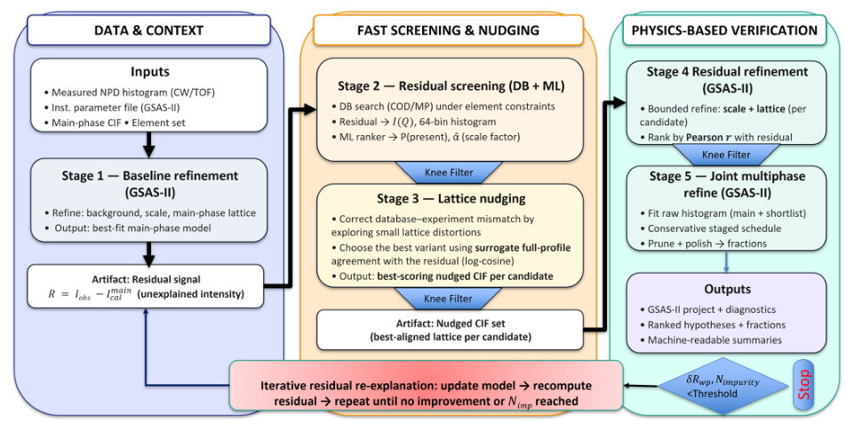
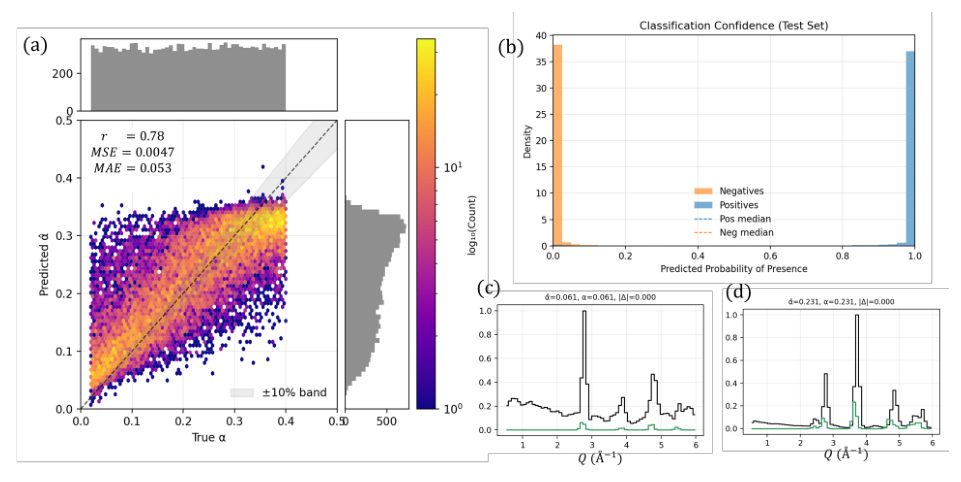
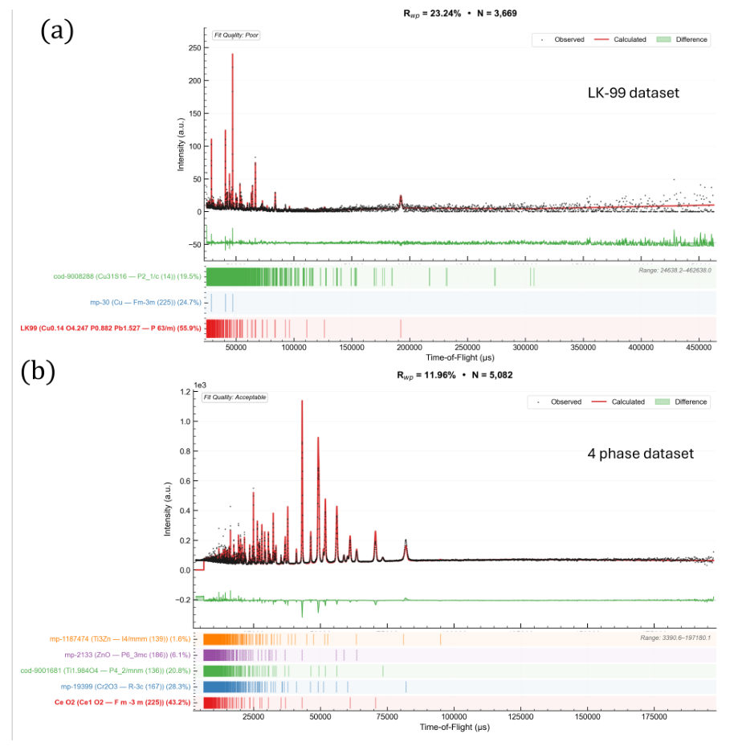
Summary. This paper introduces RADAR-PD, a machine learning framework designed to automate the identification and quantification of multiple phases in powder diffraction. By combining a mismatch-tolerant neural network with physics-based refinement, it overcomes common challenges like peak shifts and instrument-specific differences. This enables more efficient and autonomous structural discovery in materials science.
Why it may be interesting. not directly relevant
Detailed structure
Main problem. Automating phase identification and Rietveld refinement in powder diffraction is hindered by manual bottlenecks, lattice parameter mismatches, and the difficulty of identifying secondary phases in complex X-ray and neutron datasets.
Main result. The RADAR-PD framework outperforms existing tools like DARA in both accuracy and runtime, demonstrating robust multiphase analysis on complex neutron and X-ray datasets.
Method. A 'propose-verify' workflow using a mismatch-tolerant neural network for rapid candidate ranking, automated lattice nudging to align peak positions, and physics-constrained Rietveld refinement via GSAS-II.
Model / system. The framework is instrument-agnostic and applies to X-ray powder diffraction (PXRD) and neutron powder diffraction (NPD), including constant-wavelength and time-of-flight modalities.
Key observables. Diffraction histograms (intensity vs. Q or 2-theta), momentum-transfer (Q) fingerprints, and phase weight fractions.
Important parameters / regimes. Elemental constraints, lattice parameters, space groups, and scale coefficients.
Assumptions / limitations. Performance is limited by the coverage of crystallographic databases, and quantitative accuracy may be biased if Rietveld assumptions like no preferred orientation are violated.
Figures summary. Figure 1 illustrates the RADAR-PD pipeline from refinement to verification; Figure 4 shows the RADAR-PD GUI with real-time diagnostics and interactive plots.
Paper structure. The paper introduces the scientific bottleneck, describes the RADAR-PD architecture (proposer, nudging, and verification stages), presents benchmarks on synthetic and experimental datasets (RRUFF, ORNL neutron data), and discusses implementation and limitations.
Abstract
Powder diffraction is a primary structural characterization tool in materials science, yet automated phase identification remains a major bottleneck for autonomous discovery. Existing workflows rely heavily on search--match heuristics and manual Rietveld refinement, and broadly usable end-to-end automation is especially limited for neutron powder diffraction, where comparable tools are largely absent. Here we introduce RADAR-PD, a modality-aware machine learning framework for phase identification and quantification across both X-ray and neutron powder diffraction. RADAR-PD couples a mismatch-tolerant neural network operating on coarse momentum-transfer fingerprints with automated lattice nudging and physics-constrained Rietveld verification, enabling dominant-phase hypotheses to be generated from elemental constraints and secondary phases to be isolated recursively. On an experimental RRUFF PXRD benchmark, RADAR-PD outperforms DARA in recovering the reference phase. RADAR-PD further provides robust multiphase analysis on complex time-of-flight and constant-wavelength neutron datasets, addressing an important unmet need in automated neutron diffraction analysis. These results establish RADAR-PD as an auditable, instrument-agnostic framework for autonomous structural discovery.
Benchmarking and Resource Analysis for Augmented-Lagrangian Quantum Hamiltonian Descent
Authors: Zeguan Wu, Mingze Li, Muqing Zheng, Meng Wang, Junyu Liu, Samuel Stein, Ang Li, Yousu Chen, Chenxu Liu
Type: both · Category: quantum information and computing · PDF: https://arxiv.org/pdf/2605.12066v1
Analysis basis: full PDF text, analyzed in chunks
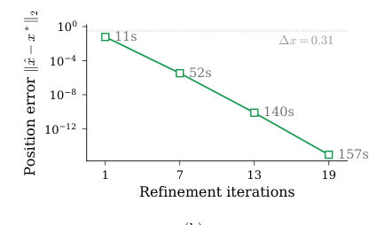
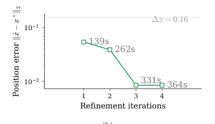
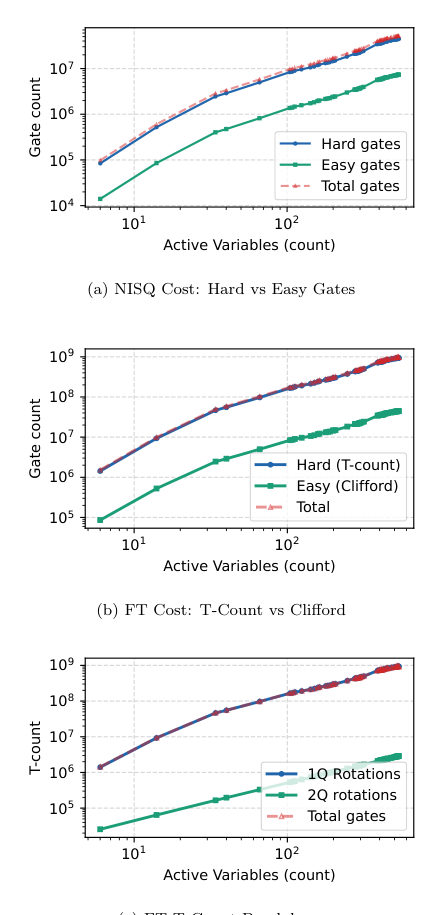
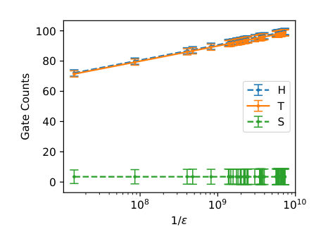
Summary. This paper introduces AL-QHD, a hybrid quantum-classical algorithm designed to solve constrained, non-convex optimization problems by embedding quantum Hamiltonian descent within the Augmented Lagrangian Method. It demonstrates that an iterative refinement technique can achieve high precision on coarse grids and provides a rigorous resource analysis showing that large-scale practical applications will likely require fault-tolerant quantum computers.
Why it may be interesting. not directly relevant
Detailed structure
Main problem. Extending Quantum Hamiltonian Descent (QHD) from unconstrained to constrained, highly nonconvex optimization problems and evaluating the gate-level resource requirements for practical applications like power system optimization.
Main result. The AL-QHD framework successfully finds near-optimal feasible points in constrained landscapes, and an iterative 'zoom' mechanism allows for high-precision solutions without increasing qubit cost, though practical large-scale applications require large-scale fault-tolerant hardware.
Method. A hybrid framework (AL-QHD) embedding QHD within the Augmented Lagrangian Method (ALM), utilizing a split-step Fourier method for classical simulation and a gate-based resource analysis for NISQ and fault-tolerant regimes.
Model / system. A time-dependent quantum Hamiltonian where the potential energy encodes the objective function (or augmented Lagrangian) and the kinetic energy promotes exploration via tunneling, implemented using one-hot encoding of discretized continuous variables.
Key observables. Objective function value, position error, and gate counts (entangling gates for NISQ and T-gates for fault-tolerant models).
Important parameters / regimes. Grid resolution (r), total evolution time (T), damping schedules (a(t), b(t)), and the probability threshold (eta = 0.99) for iterative refinement.
Assumptions / limitations. The objective function is assumed to be continuously differentiable, and the spatial domain is truncated and discretized into a finite grid.
Figures summary. Figure 1 shows the exponential decrease in objective value and position error as the number of zoom iterations increases; Figure 4 illustrates the scaling of T-gates required for approximating Rz rotations.
Paper structure. The paper introduces the AL-QHD framework, explains the encoding and Hamiltonian construction, details the iterative refinement (zoom) strategy, presents benchmarks on unconstrained and constrained test functions, and concludes with a resource analysis for power system (ACOPF) subproblems.
Abstract
Quantum Hamiltonian Descent (QHD) is a continuous optimization algorithm based on simulating a time-dependent quantum Hamiltonian whose potential energy encodes the objective function and whose kinetic energy promotes exploration through quantum interference and tunneling. While QHD is formulated for unconstrained optimization, many real-world optimization problems are constrained and highly nonconvex. In this paper, we benchmark AL-QHD, a hybrid framework that embeds QHD within the Augmented Lagrangian Method (ALM), thereby solving a sequence of unconstrained subproblems while using ALM to enforce constraints. We evaluate AL-QHD on standard nonconvex test functions and use iterative refinement to improve solution accuracy at fixed per-run qubit cost. We also perform a gate-based resource analysis on ACOPF-derived power system subproblems constructed from power-network data to estimate the quantum-computer scale required for practical applications. Resource estimates on Texas7k-derived ACOPF instances show steep hard-gate scaling, reaching $\sim 4.46 \times 10^7$ entangling gates in a NISQ-oriented model and $\sim 9.42 \times 10^8$ T gates in a fault-tolerant model at $\sim 5.3 \times 10^2$ active variables. These results suggest that AL-QHD is a useful framework for studying constrained nonconvex optimization with QHD, but that practical ACOPF-scale applications would likely require large-scale fault-tolerant quantum hardware.
CERTIFY-ED: A Multi-Layer Verification Framework for Exact Diagonalization of Quantum Many-Body Systems
Authors: Sarang Vehale, Ritu Goel
Type: theory · Category: numerical methods · PDF: https://arxiv.org/pdf/2605.11787v1
Analysis basis: full PDF text, analyzed in chunks
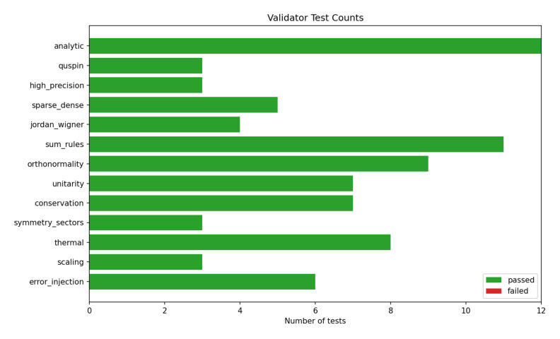
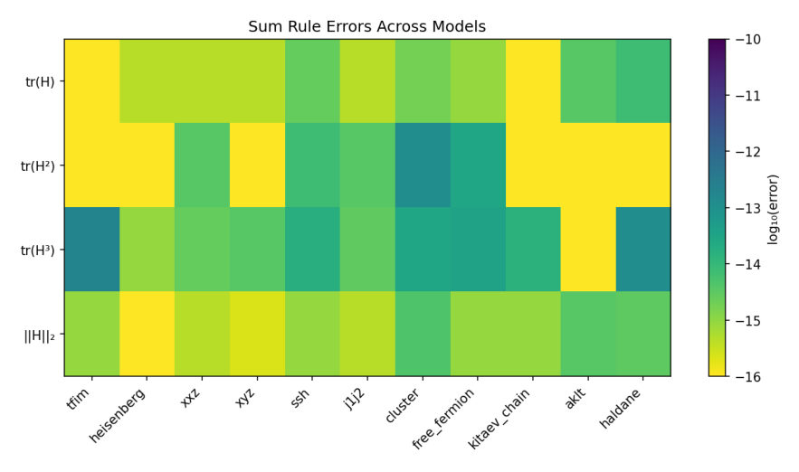
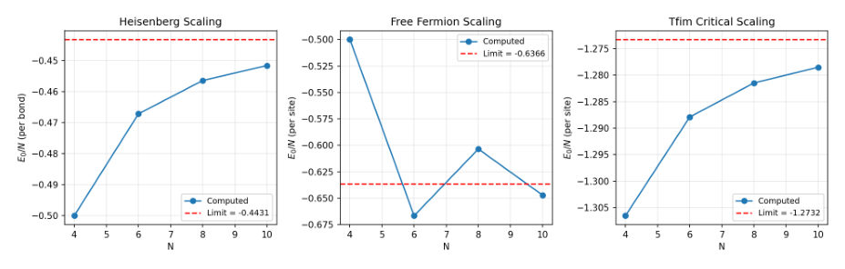
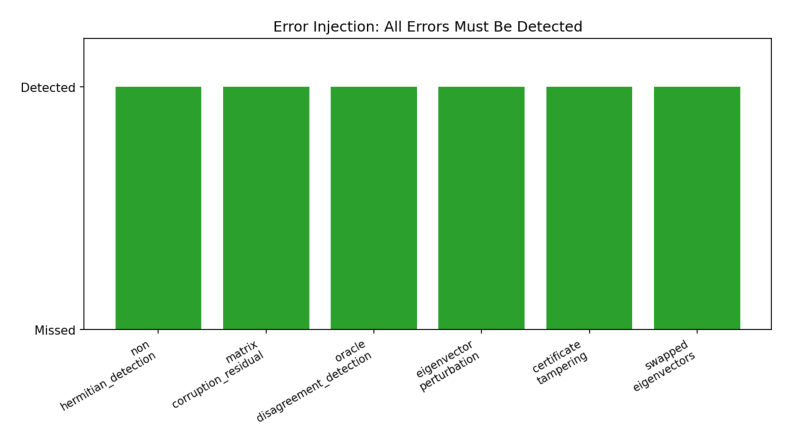
Summary. The paper introduces CERTIFY-ED, a new framework designed to verify the numerical integrity of Exact Diagonalization results. It uses multiple solvers, high-precision references, and cryptographic hashing to provide a tamper-evident certificate of correctness. This addresses a critical gap in the reliability of computational many-body physics research.
Why it may be interesting. not directly relevant
Detailed structure
Main problem. The lack of machine-checkable evidence and standardized verification for the numerical correctness of results produced by Exact Diagonalization (ED) in quantum many-body physics.
Main result. The CERTIFY-ED framework successfully passed 81/81 validation tests and 53/53 unit tests, demonstrating high-precision agreement with QuSpin and 50-digit mpmath references while detecting all six classes of injected numerical errors.
Method. A multi-layer verification framework using a multi-oracle eigensolver (three independent LAPACK paths), thirteen validation layers (including algebraic invariants, analytic limits, and high-precision references), and SHA-256 hashed certificates.
Model / system. Finite quantum lattice Hamiltonians, including 1D spin chains and 2D Kitaev honeycomb clusters, specifically covering models like Heisenberg (XXX, XXZ, XYZ), TFIM, SSH, and Hubbard models.
Key observables. Eigenvalues, eigenvectors, residuals, spectral sum-rule errors, and pairwise disagreement between solvers.
Important parameters / regimes. System sizes up to approximately 2^14 dimensions; comparison against 50-digit precision references.
Assumptions / limitations. The framework verifies that the output is a correct solution to the provided Hamiltonian, but does not verify if the Hamiltonian itself is the correct physical model; it also assumes the underlying LAPACK libraries do not share a deep, common bug.
Figures summary. Figure 2 shows spectral sum-rule errors across eleven models; Figure 3 demonstrates finite-size scaling toward thermodynamic limits; Figure 4 illustrates the successful detection of six injected error classes.
Paper structure. The paper introduces the problem of numerical trust in ED, presents the architecture of the CERTIFY-ED framework (multi-oracle, validation layers, and certification), details the error-injection self-test, reports performance results against benchmarks, and discusses limitations and future work.
Abstract
Exact diagonalization (ED) is a workhorse technique in computational quantum many-body physics, but published ED results are rarely accompanied by machine-checkable evidence of their numerical correctness. The community typically relies on the implicit trust chain LAPACK $\to$ user code $\to$ result, with at most informal agreement against another package treated as confirmation. We argue that this practice is inadequate for a method whose output frequently underpins theoretical claims, and we present \textsc{certify-ed}, a verification framework designed to be used \emph{alongside} existing ED packages (QuSpin, XDiag, ALPS) rather than as a replacement for them. The framework consists of (i) a multi-oracle eigensolver that runs three independent LAPACK paths and reports their pairwise disagreement, (ii) thirteen logically independent validation layers covering algebraic invariants, analytic limits, alternative algorithms, arbitrary-precision reference computation, conservation laws, dynamical consistency, and finite-size scaling, and (iii) tamper-evident SHA-256 hashed certificates that downstream consumers can verify. The framework also ships an error-injection layer that confirms the entire pipeline detects six injected error classes. Running on sixteen physics models from one-dimensional spin chains to two-dimensional Kitaev honeycomb clusters, our reference implementation passes 53 of 53 unit tests and 81 of 81 individual validation tests in under thirty seconds, with maximum disagreement against QuSpin of $1.6\times 10^{-14}$ across 320 eigenvalue comparisons, and agreement with 50-digit \texttt{mpmath} reference values to $1.6\times 10^{-15}$. The package is released under the MIT license on Zenodo and Github
Computed Tomography Reconstruction Algorithm Using Markov Random Field Model
Authors: Taiga Shimomiya, Taichi Kusumi, Yuichi Yokoyama, Masayuki Uesugi, Akihisa Takeuchi, Yuki Sada, Hayaru Shouno, Masato Okada
Type: theory · Category: disordered systems and neural networks · PDF: https://arxiv.org/pdf/2605.11637v1
Analysis basis: full PDF text, analyzed in chunks
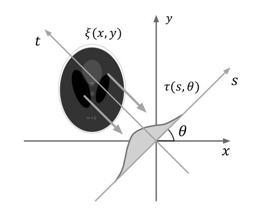
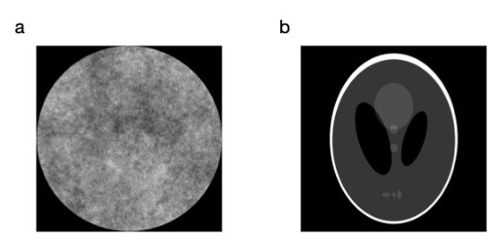
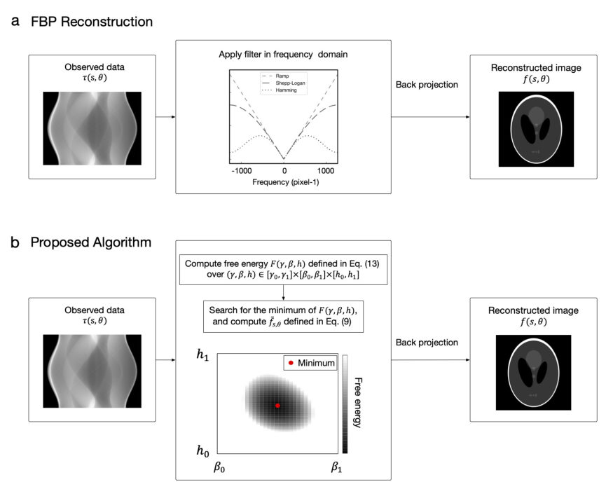
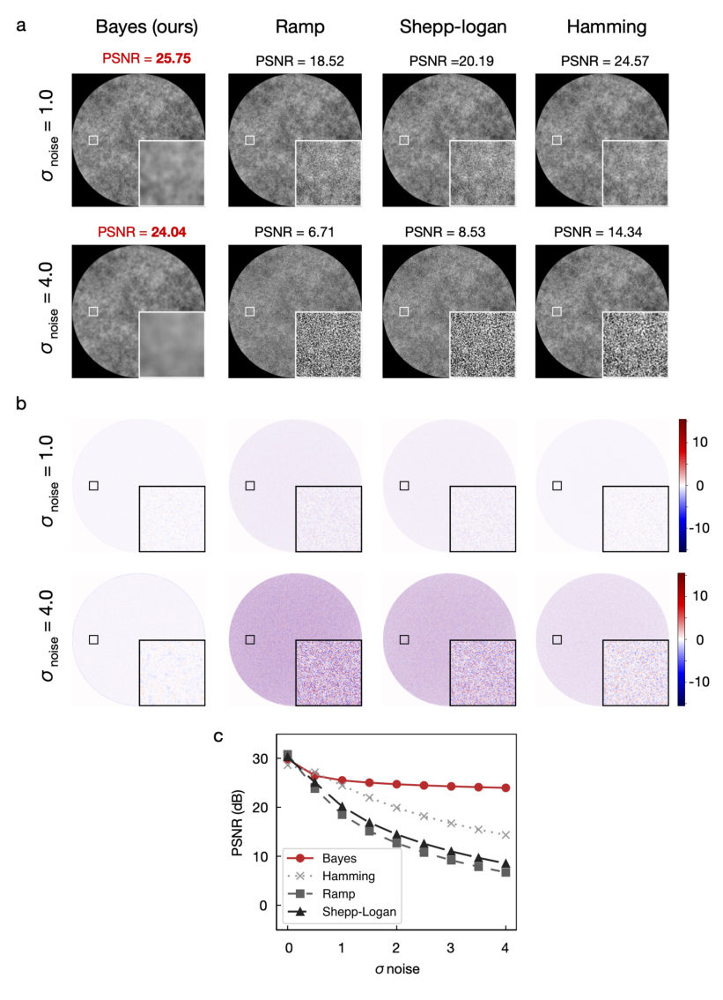
Summary. This paper presents a Bayesian reconstruction algorithm for X-ray CT that uses a Markov Random Field model to improve image quality. By adaptively estimating hyperparameters through free-energy minimization, the method effectively suppresses noise and artifacts in low-dose or sparse-sampling imaging scenarios.
Why it may be interesting. not directly relevant
Detailed structure
Main problem. Improving X-ray Computed Tomography (CT) reconstruction performance under high-noise (low-dose) and sparse-view (limited projection) conditions, where standard Filtered Back Projection (FBP) fails.
Main result. The proposed Bayesian algorithm using a Markov Random Field (MRF) model outperforms FBP by maintaining higher PSNR and better edge preservation under both high noise and reduced angular sampling.
Method. A Bayesian framework using Maximum a Posteriori (MAP) estimation in Fourier space, where hyperparameters are optimized by minimizing the Bayesian free energy.
Model / system. The system is an X-ray CT imaging model where observed projections are the Radon transform of a ground truth image subject to additive white Gaussian noise, utilizing an MRF prior to enforce spatial smoothness.
Key observables. Peak Signal-to-Noise Ratio (PSNR), Mean Squared Error (MSE), Root Mean Square Error (RMSE) of line profiles, and frequency-domain filter shapes.
Important parameters / regimes. Noise intensity (sigma), number of projection angles (N_theta), and hyperparameters gamma (noise precision), beta (smoothness), and h (amplitude suppression).
Assumptions / limitations. Assumes additive white Gaussian noise and that the underlying structure follows a specific smoothness/MRF prior.
Figures summary. Fig 1: Radon transform schematic; Fig 2: Ground-truth phantoms; Fig 3: Reconstruction workflows; Fig 4: Performance vs. noise levels; Fig 5: Performance vs. projection number; Fig 6: Edge preservation and filter shape analysis; Fig 7: Performance vs. angular sampling.
Paper structure. Introduction to CT reconstruction challenges, description of the Radon transform and FBP limitations, presentation of the Bayesian MRF model and hyperparameter estimation via free energy, numerical simulation results comparing noise and sparse-view robustness, and discussion of future work.
Abstract
X-ray computed tomography (CT) reveals the materials' internal structures non-destructively from a tilt series of projected images. Filtered back projection (FBP) is a widely-adopted reconstruction algorithm in CT owing to its small computational cost. Under low-dose or sparse-view conditions, however, FBP often amplifies noise, severely degrading the reconstructed images. In this study, we evaluated the performance of a Bayesian CT reconstruction algorithm based on the Markov random field model under such adverse conditions. Through simulations, we demonstrated that the proposed algorithm shows higher reconstruction performance than FBP under both low-dose and sparse-view conditions. The hyperparameters are estimated by minimizing the Bayesian free energy, enabling adaptive reconstruction that reflects the noise characteristics of the observed projection data. These results suggest that the proposed algorithm can broaden the applicability of CT to dose-sensitive applications and time-constrained measurements, where only limited observed projection data are available.
Contrasting structural reversibility and magnetic correlations in isostructural honeycomb magnets CrCl$_3$ and $α$-RuCl$_3$
Authors: Zachary Morgan, Iris Ye, Jiasen Guo, Michael A McGuire, Jiaqiang Yan
Type: experiment · Category: strongly correlated electrons · PDF: https://arxiv.org/pdf/2605.11106v1
Analysis basis: full PDF text, analyzed in chunks
Summary. The study compares two isostructural honeycomb magnets to show how different electronic configurations (3d vs 4d) lead to vastly different structural and magnetic behaviors. While CrCl3 is structurally stable and shows significant magnetic diffuse scattering, alpha-RuCl3 suffers from crystalline degradation and lacks observable magnetic diffuse scattering. This suggests that spin-orbit-coupled interactions in 4d systems couple strongly to the lattice, affecting structural reversibility.
Why it may be interesting. not directly relevant
Detailed structure
Main problem. Investigating the relationship between structural stability, stacking geometry, and magnetic correlations in the isostructural honeycomb magnets CrCl3 and alpha-RuCl3.
Main result. CrCl3 is structurally robust with smooth in-plane lattice evolution and prominent magnetic diffuse scattering, whereas alpha-RuCl3 exhibits abrupt, hysteretic in-plane lattice changes, crystalline degradation upon thermal cycling, and no observable magnetic diffuse scattering above TN.
Method. Single-crystal neutron diffraction using the CORELLI time-of-flight diffuse scattering spectrometer at the Spallation Neutron Source, including temperature-dependent scans and thermal cycling.
Model / system. Isostructural layered halides CrCl3 (3d3, isotropic Heisenberg exchange) and alpha-RuCl3 (4d5, spin-orbit-entangled J_eff = 1/2 states with bond-dependent interactions) featuring a honeycomb arrangement of transition metal ions.
Key observables. Lattice parameters (ah, ch), magnetic Bragg peaks, magnetic diffuse scattering, in-plane correlation length, mosaic spread, and magnetic ordering temperature (TN).
Important parameters / regimes. Temperature regimes (5.5 K to 40 K), structural transition temperatures (~140 K for alpha-RuCl3 and ~240 K for CrCl3), and magnetic propagation vectors.
Assumptions / limitations. The degradation in alpha-RuCl3 is attributed to long-range structural coherence loss rather than changes in local coordination environment.
Figures summary. Fig 1: Schematic of stacking sequences; Fig 2: Reciprocal-space maps showing peak broadening/degradation; Fig 3: Hysteresis loops of integrated intensity; Fig 4: Lattice constant evolution; Fig 5: Neutron diffraction patterns and magnetic peaks.
Paper structure. The paper introduces the comparative problem, describes the experimental neutron diffraction setup, presents structural results (lattice evolution and stability), details magnetic observations (diffuse scattering and ordering), and concludes by discussing the interplay between electronic configuration and structural reversibility.
Abstract
We report a comparative neutron single crystal diffraction study of the structural and magnetic properties of layered halides CrCl$_3$ and $α$-RuCl$_3$, which host a honeycomb arrangement of transition metal ions with distinct electronic configurations and undergo a first-order structural transition between high-temperature \textit{C}2/\textit{m} and low-temperature \textit{R}$\bar{3}$. Both compounds show a step-like change in the $c$-lattice, consistent with an expected stacking rearrangement. In contrast, the in-plane lattice response is quite different: $α$-RuCl$_3$ exhibits an abrupt hysteretic change across the transition accompanied by progressive crystalline degradation upon thermal cycling, whereas CrCl$_3$ shows a smooth in-plane lattice evolution and remains structurally robust. Magnetically, CrCl$_3$ orders into an A-type antiferromagnetic structure at T$_N$=14\,K and exhibits pronounced diffuse magnetic scattering extending up to about 40\,K. $α$-RuCl$_3$ shows no observable magnetic diffuse scattering above its zig-zag antiferromagnetic ordering temperature T$_N$=7.6\,K. These results suggest that the contrasting structural and magnetic behaviors arise from an interplay between interlayer sliding energetics and the fundamentally different electronic configurations of the two compounds.
Digital Annealer-Assisted Accuracy-First Quantum Circuit Transpilation with Integrated QUBO Mapping and Routing
Authors: Kazuma Watanabe, Hideaki Kawaguchi, Shin Nishio, Takahiko satoh
Type: both · Category: quantum information and computing · PDF: https://arxiv.org/pdf/2605.11500v1
Analysis basis: full PDF text, analyzed in chunks
Summary. This paper introduces a new way to compile quantum circuits using a Digital Annealer to significantly reduce the number of error-prone CNOT gates. By prioritizing gate reduction over compilation speed, the 'accuracy-first' approach helps improve the performance of near-term quantum hardware, especially for structured algorithms.
Why it may be interesting. not directly relevant
Detailed structure
Main problem. The challenge of minimizing CNOT gate counts during quantum circuit transpilation (mapping and routing) to preserve circuit fidelity in the NISQ era, specifically addressing the trade-off between compilation latency and gate reduction.
Main result. The proposed Hybrid approach achieves an average CNOT reduction of 13.7% compared to Qiskit, while the Full DA approach outperforms ISAAQ by 23.1% on average, particularly for structured circuits.
Method. The authors propose two strategies using a Digital Annealer (DA) to solve QUBO formulations: a Hybrid strategy (DA for initial mapping + Qiskit for routing) and a Full DA strategy (DA for both mapping and routing as iterative subproblems).
Model / system. The framework targets a 64-qubit superconducting quantum computer with an 8x8 square lattice topology. The optimization is formulated as a Quadratic Unconstrained Binary Optimization (QUBO) problem using a Hamiltonian that balances communication overhead and SWAP costs.
Key observables. Total CNOT gate count and CNOT reduction percentage.
Important parameters / regimes. The number of time steps (T=2) for routing to manage QUBO size, and an exponential decay weighting function for gate importance.
Assumptions / limitations. The framework assumes a grid-based architecture and is limited by the capacity of the Digital Annealer to handle the quadratic growth of variables in large, unstructured circuits.
Figures summary. Figure 1 shows the transpilation workflow; Figure 2 compares CNOT counts between Full DA, ISAAQ, Qiskit, and t|ket; Figure 3 compares execution times, distinguishing between cloud communication overhead and core computation.
Paper structure. The paper introduces the transpilation problem, defines the QUBO formulations for mapping and routing, presents the two proposed DA-based strategies, evaluates performance against classical heuristics and Ising machine compilers, and discusses limitations regarding circuit complexity and computational overhead.
Abstract
In the Noisy Intermediate-Scale Quantum (NISQ) era, limited qubit counts and high gate error rates directly constrain circuit fidelity, making the minimization of CNOT gate counts crucial. While conventional compilers prioritize heuristic efficiency, there is a compelling need for "accuracy-first" transpilation that prioritizes gate reduction over compilation latency. We propose a framework leveraging the Digital Annealer (DA) via two complementary strategies: (1) Hybrid, which uses DA-driven global initial mapping combined with high-speed heuristic routing by Qiskit, and (2) Full DA, which solves mapping and routing as separate DA-assisted QUBO subproblems within an iterative workflow. Benchmarks demonstrate that our Hybrid approach achieves an average CNOT reduction of 13.7 % (up to 57.4 %) compared to Qiskit's highest optimization level, with the largest gains on structured circuits such as GHZ and ASP where the initial layout is decisive. The Full DA approach matches Hybrid on structured circuits and outperforms ISAAQ by 23.1 % on average (maximum 90.8 %), but degrades on circuits with random or concentrated connectivity - exposing a trade-off between QUBO size and solution quality when the entire circuit is encoded in a single annealing pass. Although these global optimizations incur higher computational overhead than pure heuristics, our results indicate that for high-precision workflows where gate noise is the primary bottleneck, DA-assisted global initial placement provides a practical "time-for-quality" trade-off for enhancing the utility of near-term quantum hardware.
Emergent Vortex Ordering in a Multiflavor Pyrochlore-Lattice Compound GeCo$_2$O$_4$
Authors: Jiajun Mo, Otkur Omar, Shuangkui Guang, Kazuki Iida, Kazuya Kamazawa, Fabio Orlandi, Wenyun Yang, Xiaobai Ma, Xiquan Zheng, Yingying Peng, Yuan Xiao, Shunhong Zhang, Oksana Zaharko, Xuefeng Sun, Shang Gao
Type: both · Category: strongly correlated electrons · PDF: https://arxiv.org/pdf/2605.12042v1
Analysis basis: full PDF text, analyzed in chunks
Summary. This paper identifies an emergent vortex lattice in the 3D Kitaev-frustrated magnet GeCo2O4. By using a new regularized regression protocol, the authors successfully disentangle complex exchange interactions to reveal how spin-orbital entanglement stabilizes novel magnetic textures.
Why it may be interesting. not directly relevant
Detailed structure
Main problem. The study aims to identify the microscopic exchange interactions and the nature of the magnetic ground state in the Co2+ pyrochlore GeCo2O4, specifically distinguishing between single-Q and multi-Q magnetic orders.
Main result. The researchers discovered an emergent vortex lattice in a double-Q magnetic structure stabilized by substantial Kitaev interactions and geometric frustration. They also established a regularized regression framework for determining the minimal Hamiltonian in complex materials.
Method. The study combines inelastic and neutron diffraction experiments with a regularized regression framework (Pareto front analysis) and mean-field random-phase-approximation (MF-RPA) to determine exchange parameters.
Model / system. The system is the multiflavor pyrochlore-lattice compound GeCo2O4, featuring Co2+ ions with entangled spin and orbital degrees of freedom. The model includes a 7-parameter Hamiltonian with Kitaev, Heisenberg, and Dzyaloshinskii-Moriya interactions.
Key observables. Inelastic neutron scattering spectra S(Q, omega), neutron diffraction patterns, diffuse neutron scattering, and magnetic Bragg peak intensities.
Important parameters / regimes. Magnetic transition temperature TN ~ 21 K, exchange couplings (J1, J3a, J1b, JK), and spin-orbital excitation energy ~ 29 meV.
Assumptions / limitations. The analysis assumes that the magnetic dynamics can be captured by a minimal 7-parameter Hamiltonian and that the results are robust against weak tetragonal lattice distortions.
Figures summary. Fig 1 shows the Co2+ pyrochlore lattice and exchange pathways; Fig 2 compares experimental and simulated diffuse neutron scattering patterns; Table I compares fitted exchange parameters between spin-1/2 and multiflavor models.
Paper structure. The paper introduces the material and problem, presents neutron scattering data to refute molecular models, uses Pareto analysis to identify the minimal Hamiltonian, demonstrates the discovery of Kitaev interactions, and concludes with the identification of the double-Q vortex lattice state.
Abstract
Entangled spin and orbital degrees of freedom provide a multiflavor route to novel magnetic states inaccessible in conventional spin systems. Here, we report the experimental identification of an emergent vortex lattice in the multiflavor pyrochlore-lattice compound GeCo$_2$O$_4$. By combining comprehensive neutron scattering experiments with a regularized regression framework, we identify substantial Kitaev interactions among the nearest-neighboring Co$^{2+}$ pseudospins, which cooperate with geometric frustration to stabilize the vortex order. These results reveal an unexpected route to vortex-lattice order in a three-dimensional Kitaev-frustrated magnet and demonstrate a regularized protocol for Hamiltonian determination in frustrated quantum materials.
Exciton-roton mode in moiré fractional Chern insulators
Authors: Xiaoyang Shen, Zijian Zhou, Ruiping Guo, Renqi Wang, Wenhui Duan, Chong Wang, Yong Xu
Type: theory · Category: strongly correlated electrons · PDF: https://arxiv.org/pdf/2605.11794v1
Analysis basis: full PDF text, analyzed in chunks
Summary. This paper identifies a unique 'exciton-roton' mode in moire fractional Chern insulators that arises from the hybridization of interband and intraband excitations. Unlike standard FQH systems, the moire lattice breaks Galilean invariance, making this mode optically active and detectable via a characteristic double-peak in optical spectroscopy. This provides a direct spectroscopic probe for studying many-body physics in moire materials.
Why it may be interesting. not directly relevant
Detailed structure
Main problem. The paper investigates the emergence and observability of a new 'exciton-roton' collective excitation mode in moire fractional Chern insulators (FCIs) caused by the hybridization of interband and intraband excitations.
Main result. The authors demonstrate that the breaking of Galilean invariance in moire lattices allows for the hybridization of magneto-rotons and interband transitions, creating an optically bright 'exciton-roton' mode that manifests as a double-peak signature in optical spectroscopy.
Method. The study employs Exact Diagonalization (ED) combined with a variational Bethe-Salpeter Equation (BSE) approach and a microscopic two-level Hamiltonian model.
Model / system. The physical system is a moire superlattice, specifically twisted MoTe2, modeled using a Bistritzer-MacDonald continuum Hamiltonian with dual-gate screened Coulomb interactions.
Key observables. Longitudinal optical conductivity (Re sigma(omega)), excitation energy dispersions, interband/intraband overlap, and spectral weight transfer.
Important parameters / regimes. Interaction strength (epsilon), twist angle (theta), bandgap (E_bg), and the Coulomb scale (Uc ~ 50 meV).
Assumptions / limitations. The study assumes a two-level subspace for the variational BSE and focuses on the exchange channel as the dominant coupling mechanism; it also assumes an empty conduction band for certain coupling estimations.
Figures summary. Figure 1 illustrates the interband vs. intraband transitions and the conceptual formation of the exciton-roton; Figure 2 shows many-body energy branches and interband overlap evolution; Figure 3 displays the optical conductivity spectrum; Figure 6 compares the FQH and FCI dispersion relations.
Paper structure. The paper introduces the problem of collective excitations in FCIs, presents a microscopic two-level model for hybridization, utilizes ED-BSE to calculate many-body spectra and optical conductivity, compares the lattice-driven FCI results to the Galilean-invariant FQH case, and concludes with experimental implications for THz spectroscopy.
Abstract
Moiré fractional Chern insulators (FCIs) are a novel class of quantum matter that realizes fractional quantum Hall (FQH) physics in zero magnetic field and provides a platform for exploring unconventional collective excitations. Here we show that hybridization between the magneto-roton and moiré interband excitations gives rise to an exciton-roton mode absent in continuum FQH systems in the long-wavelength limit. Using exact diagonalization and a variational Bethe-Salpeter equation for twisted MoTe$_2$, we demonstrate that this hybridization is controlled by the quantum geometry and yields a mode that combines excitonic optical response with the characteristic FCI roton minimum. The resulting exciton-roton remains low-lying, with excitation energy below the interband transition, and acquires optical activity, leading to a double-peak spectroscopic signature. These results identify optical spectroscopy as a direct probe of collective excitations in moiré FCIs.
Experimental Progress in Ambient-Pressure Superconducting Bilayer Nickelate Films
Authors: Meng Zhang, Xi Yan
Type: both · Category: strongly correlated electrons · PDF: https://arxiv.org/pdf/2605.11584v1
Analysis basis: full PDF text, analyzed in chunks
Summary. This review summarizes the recent experimental breakthroughs in achieving superconductivity in bilayer nickelate thin films at ambient pressure. It highlights how strain engineering allows researchers to use advanced spectroscopic tools to study the complex electronic and orbital physics of this new high-Tc platform.
Why it may be interesting. not directly relevant
Detailed structure
Main problem. The paper reviews the challenge of understanding high-temperature superconductivity in bilayer nickelates, specifically bridging the gap between high-pressure bulk properties and the newly accessible ambient-pressure thin-film regime.
Main result. The review synthesizes progress in using epitaxial strain to mimic high-pressure structural features in films, enabling advanced spectroscopic probes to investigate orbital reconstruction, pairing symmetry, and the role of oxygen stoichiometry.
Method. The authors review various experimental techniques including ARPES, STM/STS, RIXS, and transport measurements, alongside synthesis methods like PLD, MBE, and GAE.
Model / system. The primary system is bilayer Ruddles_den-Popper nickelate films (RA3Ni2O7, where RA is a rare earth or alkaline earth) grown on compressive substrates like SLAO.
Key observables. Superconducting transition temperature (Tc), resistivity (T-linear vs T^2), Hall coefficient, superconducting gap magnitude, and Ni-O-Ni bond angles.
Important parameters / regimes. Epitaxial strain, oxygen stoichiometry, Ni 3dz2-derived gamma band position, and the transition between Fermi-liquid and strange-metal regimes.
Assumptions / limitations. The review assumes that epitaxial strain in thin films can effectively reproduce the structural environment of the high-pressure bulk phase.
Figures summary. Figure 1 shows a timeline of superconductivity discoveries; Figure 2 illustrates the evolution of Ni coordination and valence in RP phases; Figure 3 shows signatures of superconductivity in bulk La3Ni2O7 under pressure.
Paper structure. The paper follows a logical progression from the historical context of nickelate superconductivity to the advantages of thin-film platforms, followed by detailed discussions on synthesis, structural tuning, electronic structure, and unresolved questions regarding pairing symmetry.
Abstract
Bilayer Ruddlesden-Popper nickelates display superconductivity near 80 K under high pressure, establishing a new nickelate platform for studying unconventional high-temperature superconductivity. The recent stabilization of superconducting RA3Ni2O7 (RA = rare earth or alkaline earth) films at ambient pressure has changed the experimental landscape: epitaxial strain can reproduce key structural ingredients of the high-pressure phase while making transport, spectroscopy, microscopy, and device-oriented measurements directly accessible. This Review summarizes the experimental progress on ambient-pressure superconducting bilayer nickelate films, with emphasis on synthesis routes, oxygen stoichiometry, substrate-induced strain, normal-state transport, superconducting properties, doping phase diagrams, and momentum-resolved electronic structure. We highlight several issues that remain unsettled, including the reproducibility of phase-pure ultrathin films, the microscopic origin of the two-step superconducting transition, the role of oxygen defects and substrate-derived doping, the position of the Ni 3dz2-derived γ band, and the pairing symmetry. We close by outlining experimental directions that could establish a more quantitative link among crystal structure, orbital reconstruction, and superconductivity in bilayer nickelate films.
Identifying the relevant parameters in design strategies for stable glasses
Authors: Leonardo Galliano, Ludovic Berthier
Type: theory · Category: disordered systems and neural networks · PDF: https://arxiv.org/pdf/2605.12127v1
Analysis basis: full PDF text, analyzed in chunks
Summary. This paper challenges the idea that designing glasses with specific structural features like hyperuniformity or local order is the key to achieving ultrastability. It shows that while these properties correlate with stability, the true driver is the dynamical process of coupling particle positions and diameters. This suggests that future glass design should focus on the underlying dynamics rather than targeting specific static observables.
Why it may be interesting. not directly relevant
Detailed structure
Main problem. Determining whether specific structural properties like hyperuniformity or local order are the causal drivers of glass stability or merely correlated outcomes of the dynamical processes used to create them.
Main result. The authors demonstrate that optimizing structural properties does not enhance glass stability; instead, stability is driven by the underlying dynamical processes (specifically diameter-position coupling) that allow the system to reach deeper energy landscapes.
Method. The study uses NPT Monte Carlo simulations, biased Monte Carlo to target specific order parameters, and 'random organization' dynamics to enhance hyperuniformity, all while decoupling structural optimization from particle diameter dynamics.
Model / system. A two-dimensional model of a binary mixture of hard disks with a diameter ratio of 1:1.4 and a 65:35 composition.
Key observables. Self-intermediate scattering function Fs(q, t), relaxation time (tau_alpha), isothermal compressibility chi(q), local packing order parameter (Theta), and reduced pressure (Z).
Important parameters / regimes. Reduced pressure (Z), packing fraction (phi), biasing strength (lambda), and initial pressure (Z_init).
Assumptions / limitations. The study assumes that the effectiveness of design strategies can be understood by separating the effect of optimized observables from the effect of the generating dynamics.
Figures summary. Figure 1 shows the time evolution of the scattering function and the transition from Arrhenius to parabolic relaxation behavior; Figure 2 shows the q-dependence of compressibility; Figure 4 shows hyperuniformity enhancement; Figure 6 shows the decrease in local order during biased MC.
Paper structure. The paper introduces the problem of causality in glass design, establishes a benchmark using equilibrium and conventional glass properties, presents new methods for optimizing structure without diameter dynamics, and concludes by arguing that stability is a product of specific dynamical couplings.
Abstract
A glass is conventionally obtained by cooling a bulk supercooled liquid through its glass transition temperature. The discovery of ultrastable glasses prepared using physical vapor deposition, together with the recent multiplication of numerical algorithms created to increase the stability of glasses, demonstrates the existence of a variety of strategies for designing glasses with different physical properties. This raises a broader question: which parameters most strongly govern the enhancement of glass stability? Existing computational strategies often produce highly stable glasses by optimizing certain physical properties through dynamical changes in particle diameters. We challenge the idea that these physical quantities are causally responsible for glass stability and suggest instead that diameter dynamics is the principal source of enhanced stability. To support our view, we introduce computational methods to optimize physical quantities without changing the particle diameters. Using the examples of enhanced hyperuniformity at large scale and local ordering at small scale, we design glass configurations with highly optimized values compared to bulk equilibrium states. However, these glasses do not show enhanced stability. The proposed physical quantities are correlated with glass stability, but are not causally responsible for ultrastability. These findings indicate that design rules for stable glasses should be reinterpreted in terms of the dynamical processes that generate stability, rather than the optimized physical quantities they target.
Link length and energy fluctuations in extensible freely jointed chains
Authors: Michael R. Buche
Type: theory · Category: statistical mechanics · PDF: https://arxiv.org/pdf/2605.12333v1
Analysis basis: full PDF text, analyzed in chunks
Summary. This paper provides new analytical tools to quantify thermal fluctuations in the length and energy of stretchable polymer chains. It introduces highly accurate asymptotic formulas that simplify the modeling of phenomena like chain dissociation. The study specifically highlights that while link length fluctuations are approximately Gaussian, energy fluctuations are not.
Why it may be interesting. not directly relevant
Detailed structure
Main problem. Quantifying thermal fluctuations in link length and energy within the extensible freely jointed chain (FJC) model to improve models of polymer chain dissociation.
Main result. The derivation of highly accurate asymptotic relations and exact analytical formulas for the moments of link length and energy, demonstrating that link length follows an approximately normal distribution for high stiffness.
Method. Analytical derivation using Laplace's method for asymptotic expansions and symbolic computation via Mathematica to obtain exact moments.
Model / system. An extensible freely jointed chain (FJC) consisting of independent, identical links with a harmonic potential governing bond stretching, analyzed in an isotensional ensemble under applied force.
Key observables. Ensemble averages of link length and energy, variance, standard deviation, and probability density distributions.
Important parameters / regimes. Nondimensionalized link length (lambda), applied force (eta), link stiffness (kappa), and link energy (upsilon).
Assumptions / limitations. The model assumes a harmonic potential for link stretching and focuses on the high stiffness (kappa >> 1) regime for asymptotic accuracy.
Figures summary. Figures compare exact and asymptotic relations for average link length, variance, and energy; they also show probability density distributions for length and energy under varying force and stiffness.
Paper structure. The paper introduces the extensible FJC model, derives asymptotic and exact analytical relations for moments, performs error analysis of the approximations, and presents probability distributions for the observables.
Abstract
The freely jointed chain is often applied to model the thermodynamics of single polymer chains, but the traditional formulation of the model lacks internal energy changes due to bond stretching. For this reason, the extensible freely jointed chain model includes a potential energy function, typically harmonic, that governs the length of each link in the chain. Among the other quantities of interest that are subject to thermal fluctuations, these link lengths and energies too fluctuate about their ensemble average values. Since a plethora of models for polymer chains and networks incorporate chain dissociation as a function of either link length or energy, these fluctuations are crucial to understand and quantify. Motivated by this fact, fluctuations in link length and energy are analyzed within a freely jointed chain under an applied force. These fluctuations are quantified through their average values, standard deviations, and probability distributions. Across all values, asymptotically correct analytic relations and their less ergonomic exact counterparts are introduced. The asymptotic relations are verified to be accurate through direct comparison and to be correct within transcendentally small terms through error analysis. In certain cases, the fluctuations are shown to be approximately normally distributed. Hereafter, model components predicated on link length or energy ought to account for these fluctuations.
Magnetism and spin dynamics of Na\textsubscript{5}Yb(MoO\textsubscript{4})\textsubscript{4}: A weakly interacting rare-earth stretched diamond lattice
Authors: N. Rajeesh Kumar, J. Khatua, Changhyun Koo, Izumi Umegaki, C. -E. Yin, C. -W. Wang, A. M. Strydom, H. -T. Jeng, Kwang-Yong Choi, R. Sankar, W. -T. Chen
Type: both · Category: strongly correlated electrons · PDF: https://arxiv.org/pdf/2605.12045v1
Analysis basis: full PDF text, analyzed in chunks
Summary. This paper investigates a rare-earth material with a stretched diamond lattice where exchange interactions are almost entirely suppressed. It demonstrates that the magnetic behavior is instead governed by long-range dipolar interactions, creating a unique dipolar quantum paramagnetic state. The findings also suggest the material is a stable candidate for use in adiabatic demagnetization refrigeration.
Why it may be interesting. not directly relevant
Detailed structure
Main problem. The study aims to characterize the magnetic ground state and spin dynamics of Na5Yb(MoO4)4, specifically determining whether the system exhibits long-range magnetic order or a quantum-disordered state driven by dipolar interactions.
Main result. The researchers identified the material as a dipolar quantum paramagnet where long-range dipolar correlations and single-ion anisotropy dominate, while exchange interactions are suppressed to the millikelvin scale, preventing long-range order down to 50 mK.
Method. The study employs neutron and X-ray powder diffraction, magnetic susceptibility, specific heat, and muon spin relaxation (muSR) alongside DFT+U calculations and Crystal Electric Field (CEF) modeling.
Model / system. The system is Na5Yb(MoO4)4, a 3D stretched diamond lattice of Yb3+ ions with a large interatomic separation of 6.33 A, featuring an effective J_eff = 1/2 Kramers doublet ground state.
Key observables. Magnetic susceptibility, specific heat, muon spin relaxation rates, lattice constants, and crystal electric field energy gaps.
Important parameters / regimes. Temperature range from 60 mK to 350 K; exchange interactions in the micro-eV range; dipolar-induced energy gap of approximately 0.13 K; Yb-Yb separation of 6.33 A.
Assumptions / limitations. The use of a point-charge model for CEF parameters and the assumption that the system can be described by a two-level pseudospin-1/2 model at high magnetic fields.
Figures summary. Figure 8 compares total energy and magnetic moments for various magnetic orders using PBE and PBE+U; Figure 9 shows the Density of States for FM and AFM configurations.
Paper structure. The paper begins with structural characterization via diffraction, followed by thermodynamic and magnetic measurements, then moves into microscopic spin dynamics via muSR, supported by DFT and CEF theoretical modeling, and concludes with implications for ADR applications.
Abstract
We report a comprehensive investigation of the structural and magnetic properties of Na$_5$Yb(MoO$_4$)$_4$, a member of the stretched diamond magnetic lattice family. Neutron powder diffraction at 3.3~K confirms that the compound crystallizes in the tetragonal \textit{I4$_1$/a} space group, with a large interatomic separation of 6.33~Å between magnetic Yb ions forming a three-dimensional stretched diamond framework. Magnetic susceptibility and specific heat measurements reveal no evidence of long-range magnetic order down to 60~mK. The low-temperature magnetic behavior is governed by an effective $J_{\mathrm{eff}} = 1/2$ Kramers doublet ground state, well separated from excited crystal-field levels, arising from the distorted dodecahedral oxygen coordination of Yb$^{3+}$. Density functional theory calculations within the DFT+$U$ framework indicate that exchange interactions between Yb ions are negligibly small, consistent with the long O--Mo--O super-superexchange pathways. The temperature dependence of the specific heat exhibits signatures of gapped spin excitations, most likely originating from long-range dipolar correlations and further shaped by weak exchange interactions together with the strong single-ion anisotropy of the Yb moments. Muon spin relaxation measurements reveal persistent low-energy spin dynamics, indicating that dipolar correlations remain dynamic and are insufficient to stabilize static magnetic order down to 50~mK. These results identify Na$_5$Yb(MoO$_4$)$_4$ as a rare example of a dipolar quantum paramagnet in which single-ion physics and long-range dipolar interactions dominate, while exchange interactions are suppressed to the millikelvin energy scale.
← Index · ← Previous · Next →